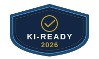

Ihr Nutzen auf einen Blick
Entwickelt für KMU, Selbständige und öffentliche Hand, die KI verantwortungsvoll einsetzen wollen.
Sicherheit & Compliance
Prüfen Sie die Konformität Ihrer KI-Anwendungen mit EU AI Act und DSGVO.
Nur 24 % der KMU haben ein KI-Governance-Framework. (Mittelstand Digital, 2025)
Effizienz & ROI
Decken Sie Zeit- und Kosteneinsparungen auf und identifizieren Sie Potenziale.
Unternehmen verschenken bis zu 40 % der KI-Produktivitätsgewinne durch fehlende Talentstrategie. (EY, 2025)
Fördermittel-Check inklusive
Identifizieren Sie passende EU- und Bundes-Förderprogramme für Ihre KI-Investitionen – direkt im Report.
KfW hat am 1. Juli 2025 neue KI-Förderprogramme aufgelegt — bis zu 25 Mio. € pro Projekt. (KfW, 2025)
Aktuelle Förderprogramme ansehen →Drei Reports. Ein Ziel: KI-Klarheit.
Von der Standortbestimmung bis zur vollständigen KI-Strategie — wählen Sie die passende Tiefe.
KI-Readiness Report
- KI-Readiness-Score (0–100)
- Risikoanalyse & Compliance-Check
- EU AI Act Einordnung
- Quick Wins & 90-Tage-Roadmap
- Fördermittel-Check
KI-Potenzial-Analyse
- Bruchpunkt-Analyse & Implementierungsplan
- Business Case mit 3-Jahres-Projektion
- Top-5-Risikobewertung & Absicherung
- Konkrete 7-Tage-Aktionen
Wird automatisch auf Basis Ihrer Report-1-Daten erstellt — keine erneute Befragung.
KI-Strategiebericht
- Vollständige KI-Strategie für 12 Monate
- Budget-Kalkulation (3 Szenarien)
- ROI-Analyse mit Break-Even-Berechnung
- Phasen-Plan mit Meilensteinen
- Regionale Fördermittel-Recherche
- Branchenspezifische Benchmarks
EU AI Act: Der Zeitplan für Ihr Unternehmen
Zwei Deadlines sind bereits verstrichen. Hochrisiko-Fristen wurden verschoben — doch die Vorbereitungszeit läuft jetzt.
EU AI Act tritt in Kraft
Verbotene KI-Praktiken untersagt
AI-Literacy-Pflicht aktiv (Artikel 4) — gilt für alle Unternehmen
GPAI-Modell-Pflichten gelten
Nationale Aufsichtsstrukturen müssen stehen
Transparenzpflichten (Artikel 50) treten in Kraft
Kennzeichnung von KI-generierten Inhalten, Deepfakes etc. · Durchsetzung beginnt — Bußgelder möglich
Hochrisiko-KI-Pflichten (Anhang III)
EU-Staaten einigten sich im März 2026 auf Verschiebung von August 2026 — neue Backstop-Frist: Dezember 2027
Hochrisiko-KI in regulierten Produkten (Anhang I)
Legacy-GPAI-Modelle müssen konform sein · Verschoben von August 2027
Update März 2026: Die EU-Mitgliedstaaten haben sich auf eine Verschiebung der Hochrisiko-Fristen geeinigt (Digital Omnibus). Hochrisiko-Pflichten für Anhang-III-Systeme gelten spätestens ab Dezember 2027, für Anhang-I-Systeme ab August 2028. Die Anforderungen selbst bleiben unverändert — nur der Zeitrahmen wurde angepasst. Die Vorbereitungsarbeit — Risikoklassifizierung, Dokumentation, Governance — sollte jetzt beginnen.
Quelle: Verordnung (EU) 2024/1689, veröffentlicht im Amtsblatt der EU. Volltext: eur-lex.europa.eu
Wolf Hohl
Gründer, KI-Sicherheit.jetzt
- TÜV-zertifiziertes KI-Management (ISO/IEC 17024)
- Spezialisierung: EU AI Act & DSGVO
- 30+ Jahre Marketing, Kommunikation & Unternehmensführung

Bereit für Ihren KI-Readiness-Report?
Jetzt starten
Erhalten Sie Ihre individuelle KI-Standortbestimmung mit Fördermittel-Check und konkreten Handlungsempfehlungen.
Zum Readiness-Report →Keine Verpflichtung · Ergebnis sofort per E-Mail · Steuerlich absetzbar
Neu: Ab Sommer 2026 — KI-Kompetenz-Schulung für Ihr Team (Artikel-4-Pflicht). Zur Warteliste →